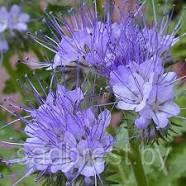
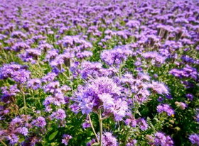

Бджільництво
Продукти
Лікування
Буркун.
 Продовжуючи тему медоносів, не можу не розповісти про таку чудову медоносну культуру, як буркун.
На відміну від фацелії, буркун - рослина дворічнаі масово зацвітає лише на другий рік. Засівають буркун
навесні з розрахунку 200 гр насіння на сотку. Семена закладають на глибину 1-2 див. Буркун рослина зимостійка
і його сміливо можна засівати під зиму, але я це робив в кінці квітня.
Продовжуючи тему медоносів, не можу не розповісти про таку чудову медоносну культуру, як буркун.
На відміну від фацелії, буркун - рослина дворічнаі масово зацвітає лише на другий рік. Засівають буркун
навесні з розрахунку 200 гр насіння на сотку. Семена закладають на глибину 1-2 див. Буркун рослина зимостійка
і його сміливо можна засівати під зиму, але я це робив в кінці квітня.
У перший сезон побіги буркуну невисокі і
ледве піднімаються вище за пояс. Зате на другий рік буркун зростає в свою повну силу. І загубитися в його
запашних чагарниках нічого не коштує навіть високій людині. Латинська назва буркуну — мелілотус — медова
рослина. Розрізняють жовтий буркун і білий. Буркун відноситься до сімейства бобів. Він невимогливий до грунту
і є відмінним сидератом.
У перший рік його не скошують, а на другий рік зазвичай скошують двічі. Після першого
укосу буркун кущиться і квітне ще більше. Аромат квітучого буркуну не сплутаєш ні з чим. Він квітне тривалий
період, навіть в посушливу пору року.
 Якщо вам раптом повезло і недалеко від вашої пасіки буркуном засіяли велике колгоспне поле або ви прибули
на таке поле з кочівлею, то не кваптеся радіти. Річ у тому, що в більшості випадків буркун прибирають на
силос в період його масового цвітіння (як інколи і соняшник). При цьому незліченна безліч бджіл, що знаходяться
на медозборі, разом із скошеною зеленою масою потрапляє в подрібнювач силосного комбайна і гине. Бджоляру
завдається непоправного збитку. Тут дуже важливе сповіщення бджоляру про майбутнє скошування. Пристосування,
що відлякують бджіл, застосовуються рідко. Звичайно, можна косити вночі у валяння, а вдень прибирати на сінаж,
але власники посівів часто думають по своєму.
Якщо вам раптом повезло і недалеко від вашої пасіки буркуном засіяли велике колгоспне поле або ви прибули
на таке поле з кочівлею, то не кваптеся радіти. Річ у тому, що в більшості випадків буркун прибирають на
силос в період його масового цвітіння (як інколи і соняшник). При цьому незліченна безліч бджіл, що знаходяться
на медозборі, разом із скошеною зеленою масою потрапляє в подрібнювач силосного комбайна і гине. Бджоляру
завдається непоправного збитку. Тут дуже важливе сповіщення бджоляру про майбутнє скошування. Пристосування,
що відлякують бджіл, застосовуються рідко. Звичайно, можна косити вночі у валяння, а вдень прибирати на сінаж,
але власники посівів часто думають по своєму.
Напослідок дам декілька корисних порад, які я перевірив на собі, тому хто бажає культивувати буркун у себе на ділянці.
На другий рік після закінчення цвітіння буркуну не кваптеся його скошувати або висмикувати із землі.
Зберіть насіння і залиште зимувати в полі. За зиму його довга коренева система подгниє і весною ви з
легкістю повисмикуєте кущі буркуну з грунту. Багато хто думає, що досить засіяти поле буркуном один раз і
він зростатиме на цьому полі вічно. Нічого подібного. Після двох років поле заростає травою і вимагає повторної
культивації. Точно також немає сенсу кидати насіння буркуну в траву, сподіваючись, що вони проростуть. Буркун,
хоча і невибаглива рослина, але все таки потребує підготовки поля.
Мед з буркуну.
 Залежно від грунтово-кліматичних умов медопродуктівность буркуну від 100 до 600 кг/га. Буркун відмінний медонос
і добре виділяє нектар навіть в засуху. Мед з нього дуже якісний, лікувальний і містить близько 60 лікарських
компонентів. Буркуновий мед відноситься до дорогих елітних сортів. Із-за високого вмісту глюкози (36,78%) він за
кольором білий.Мед з білого буркуну відрізняється сильним ароматом ванілі. Мед з жовтого буркуну володіє тоншим
і ніжнішим ароматом. У народній медицині буркуновий мед з успіхом застосовується при лікуванні:
Залежно від грунтово-кліматичних умов медопродуктівность буркуну від 100 до 600 кг/га. Буркун відмінний медонос
і добре виділяє нектар навіть в засуху. Мед з нього дуже якісний, лікувальний і містить близько 60 лікарських
компонентів. Буркуновий мед відноситься до дорогих елітних сортів. Із-за високого вмісту глюкози (36,78%) він за
кольором білий.Мед з білого буркуну відрізняється сильним ароматом ванілі. Мед з жовтого буркуну володіє тоншим
і ніжнішим ароматом. У народній медицині буркуновий мед з успіхом застосовується при лікуванні:
- захворювань верхніх дихальних доріг(бронхіти, тонзілітти і ін.);
- головних болів і безсоння;
- гіпертонічній хворобі, і особливо добре допомагає при хворобах серця;
- гнійні рани, чирьі добре лікуються зовнішніми компресами на основі поєднання буркунового меду з прополісом;
- при запаленні грудних залоз і суглобів успіх приносить медовий масаж;
- при міозитах приймають теплі ванни з буркуновим медом;
Фацелія - нескінченне джерело нектару.

Поглядаючи одного разу на порослі бур'яном околиці навколо своєї пасіки я замислився а не чи засіяти мені хоч би
частина своїх угідь якою-небудь медоносною культурою. В період відсутності узятку це буде непоганою підмогою для бджіл.
Знайомі бджолярі дуже нахвалювали фацелію. Вона і нектару багато виділяє і грунт удобрює, і від бур'янів, мовляв,
захищає. Три в одному, коротше. Вирішив я перевірити цю справу і розпочав з фацелії.
Навесні узяв, та засіяв на обробленій ділянці кілограма три купленого у фермера насіння. Для рівномірного засіву
змішав їх з піском і заборонував, злегка присипавши їх землею. Слід сказати, що цей медонос невимогливий до якості
грунту, не потребує добрив, а навпроти, після перекопування сам удобрює грядки, являючись неперевершеним сидератом.
Цією культурою також рекомендують засівати міжряддя на грядках, щоб не росли бур'яни.
Пройшли півтора місяці і фацелія моя зацвіла пишними блакитними кольорами, а з поля повіяв приємний і сильний
квітковий аромат. Я тут же звернув увагу на те, як люблять її бджоли цей медонос. Від світанку і до самих сутінків
поле буквально кипіло бджолами. Коли дивишся на квітуче поле фацелії мимоволі спливають в пам'яті слова з поеми
"Фацелія" Михайла Пришвина : "Неначе ночували тут сині птахи і залишили своє синє пір'я". Якщо вдивитися в квітку
фацелії, то неважко помітити в його глибині великі прозорі краплі ароматного нектару. Річ у тому, що усього лише одна
квітка цієї медоносної культури виділяє його близько 5 мг. Нектар фацелії на 60% складається з цукру. Ось що так
вабить невтомних волохатих трудівниць.
Виділимо характерні якості фацелії як медоносної культури і сидерата :
- Один гектар поля, засіяного фацелією може дати від 150 до 250 кг меду, що в 5 разів більш того ж поля гречки;
- Мед з фацелії, із зеленуватим відтінком і приємним ароматом, вважається одним з кращих сортів. Допомагає при
захворюваннях серця і покращує пам'ять;
- Здатність виділяти нектар у фацелії практично не залежить від погодних умов. Медонос відмінно працює як в посуху,
так і в дощ;
- Фацелія - це своєрідний санітар грунту : вона пригнічує розвиток шкідливих комах, паразитів і земляних нематод;
- Фацелія - це доктор для овочевих культур: вона захищає їх від вірусів і хвороб;
- Фацелія добре бореться з бур'янами, удобрює грунт і нормалізує її кислотність;
 Батьківщина цієї цінної культури - США, Каліфорнія. Тривалість її цвітіння залежить від погодних умов. У дощову погоду цвітіння затягується, в суху і жарку прискорюється. В середньому фаза цвітіння займає близько місяця. Фацелія - культура однорічна. Після закінчення цвітіння і збору насіння її перекопують. Для організації раннього медозбору насіння фацелії засівають у кінці жовтня, з настанням заморозків. В цьому випадку вони вже не зійдуть під зиму, а зацвітуть ранньої весни. Такий підхід дозволяє засівати поле двічі за сезон. Навесні занадто ранній засів неможливий із-за бруду. На підставі свого досвіду, рекомендую усім бджолярям фацелію, як кращий медонос.